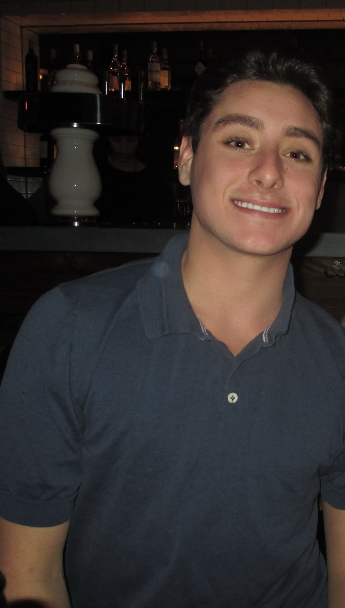

About
Behind the camera

Hi, I’m Wesley.
I’m a photographer drawn to travel, editorial storytelling, events, and the visual rhythm of everyday life.
Through photography, I aim to create work that feels cinematic, personal, and timeless.
Based in New Jersey & New York, working everywhere and beyond.
Email: wesjcherry@gmail.com
Instagram: @wescheringal